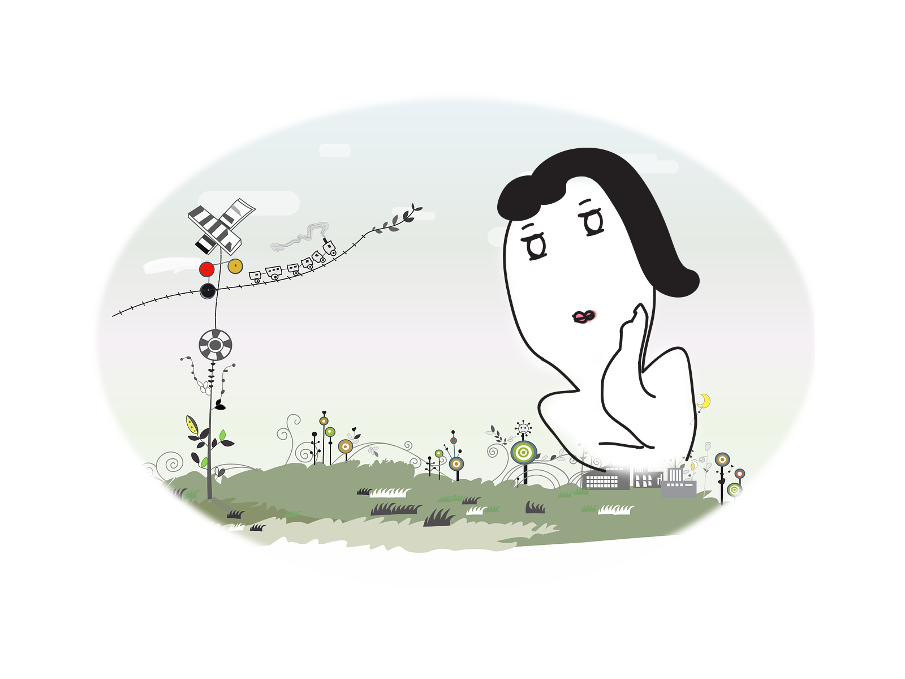

나를 소개해 본다.
직업은 웹디자이너라는 타이틀을 가지고 있지만 실력이 출중한지는 가름할수 없다.
왜냐하면 일반회사에 오래 다니다보니 코딩업무가 향상되지 못했다. 그러나
내가 해보고 싶은 코딩에 관련된 공부를 놓고 싶은 않아 꾸준히 공부해본다.
아침에 6시 기상하여, 씻고 밥먹고 7시 나간다. 계란흰자위 경기권이라 출퇴근 시간이 길다.
경기권에 사는 사람들은 아마도 나와 비슷하게 출근들 할거다.
이젠 아침 일찍 기상도 나름 부지런해 져서 오히려 좋다.
지금은 출퇴근 시간과 주말을 이용하여 나의 부케를 즐기고 있다.
버스나 지하철에서 밀리의 서재로 독서도 하고 있고,
주말엔 내가 하고싶은 인터렉티브 개발공부도 하고 있어서
일상이 지루하거나 하지 않다.
점심식사후 회사 근처를 크게 한바퀴 돌면서, 걷기 운동겸 직장동료와 이런 저런 이야기 꽃을 피우며 한껏 수다도 떨어본다.
회사업무는 홈페이지 구축 관리부터 상세페이지나 신상품 등록, 각종 이벤트 디자인, 판촉에 필요한 인쇄디자인등 작은 회사다 보니, 웹+편집+제품 디자인 구분없이 디자인에 관한 모든 업무를 담당하고 있다.
나의 꿈은 퍼블리셔가 되고 싶었는데, 어쩌다 보니, 퍼블리셔가 꿈에서 멀어졌다.